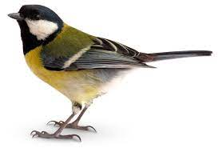
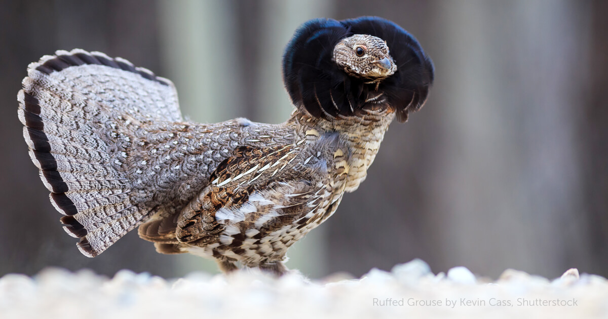
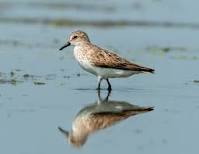

| Types of birds |
| Forests |
| Owls |
 |
Owls are birds from the order Strigiformes, which includes over 200
species of mostly solitary and nocturnal birds of prey typified by an
upright stance, a large, broad head, binocular vision, binaural
hearing, sharp talons, and feathers adapted for silent flight.
|
| Songbirds |
 |
A songbird is a bird belonging to the suborder Passeri of the perching
birds. Another name that is sometimes seen as the scientific or
vernacular name is Oscines, from Latin oscen, "songbird"
|
| Grasslands |
| Grouse |
 |
Grouse are a group of birds from the order Galliformes, in the family
Phasianidae. Grouse are presently assigned to the tribe Tetraonini, a
classification supported by mitochondrial DNA sequence studies, and
applied by the American Ornithologists' Union, ITIS, International
Ornithological Congress, and others.
|
| Shorebirds |
 |
Waders or shorebirds are birds of the order Charadriiformes commonly
found wading along shorelines and mudflats in order to forage for food
crawling or burrowing in the mud and sand, usually small arthropods
such as aquatic insects or crustaceans.
|